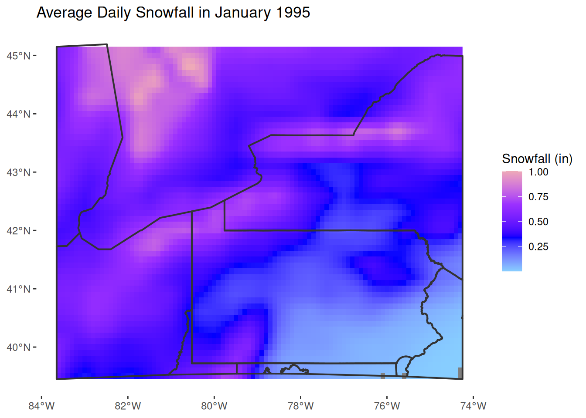
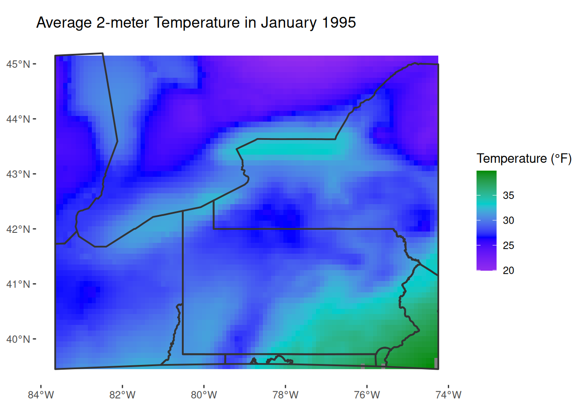
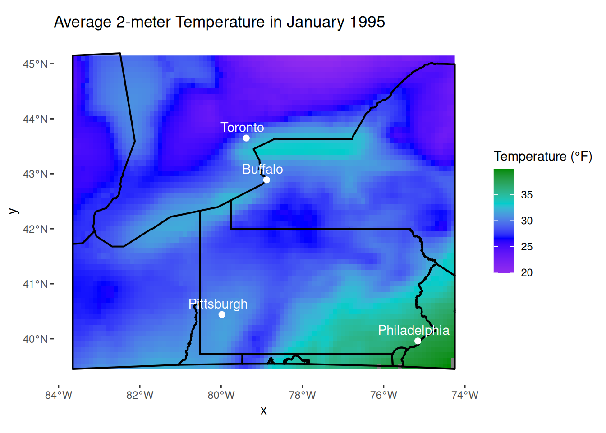

<!DOCTYPE html>
<html xmlns="http://www.w3.org/1999/xhtml" lang="en" xml:lang="en"><head>

<meta charset="utf-8">
<meta name="generator" content="quarto-1.11.9">

<meta name="viewport" content="width=device-width, initial-scale=1.0, user-scalable=yes">

<meta name="author" content="Your name here">
<meta name="dcterms.date" content="2026-11-12">

<title>My Final Project Template – GEO511_FinalProject</title>
<style>
/* Default styles provided by pandoc.
** See https://pandoc.org/MANUAL.html#variables-for-html for config info.
*/
span.smallcaps{font-variant: small-caps;}
div.columns{display: flex; gap: 1.5em;}
div.column{flex: auto;}
@media screen {
div.columns{gap: min(4vw, 1.5em);}
div.column{overflow-x: auto;}
}
div.hanging-indent{margin-left: 1.5em; text-indent: -1.5em;}
ul.task-list{list-style: none;}
ul.task-list li input[type="checkbox"] {
  width: 0.8em;
  margin: 0 0.8em 0.2em -1em; /* quarto-specific, see https://github.com/quarto-dev/quarto-cli/issues/4556 */ 
  vertical-align: middle;
}
/* CSS for syntax highlighting */
html { -webkit-text-size-adjust: 100%; }
pre > code.sourceCode { white-space: pre; position: relative; }
pre > code.sourceCode > span { display: inline-block; line-height: 1.25; }
pre > code.sourceCode > span:empty { height: 1.2em; }
.sourceCode { overflow: visible; }
code.sourceCode > span { color: inherit; text-decoration: inherit; }
div.sourceCode { margin: 1em 0; }
pre.sourceCode { margin: 0; }
@media screen {
div.sourceCode { overflow: auto; }
}
@media print {
pre > code.sourceCode { white-space: pre-wrap; }
pre > code.sourceCode > span { text-indent: -5em; padding-left: 5em; }
}
pre.numberSource code
  { counter-reset: source-line 0; }
pre.numberSource code > span
  { position: relative; left: -4em; counter-increment: source-line; }
pre.numberSource code > span > a:first-child::before
  { content: counter(source-line);
    position: relative; left: -1em; text-align: right; vertical-align: baseline;
    border: none; display: inline-block;
    -webkit-touch-callout: none; -webkit-user-select: none;
    -khtml-user-select: none; -moz-user-select: none;
    -ms-user-select: none; user-select: none;
    padding: 0 4px; width: 4em;
  }
pre.numberSource { margin-left: 3em;  padding-left: 4px; }
div.sourceCode
  {   }
@media screen {
pre > code.sourceCode > span > a:first-child::before { text-decoration: underline; }
}
</style>


<script src="site_libs/quarto-nav/quarto-nav.js"></script>
<script src="site_libs/quarto-nav/headroom.min.js"></script>
<script src="site_libs/clipboard/clipboard.min.js"></script>
<script src="site_libs/quarto-search/autocomplete.umd.js"></script>
<script src="site_libs/quarto-search/fuse.min.js"></script>
<script src="site_libs/quarto-search/quarto-search.js"></script>
<meta name="quarto:offset" content="./">
<script src="site_libs/quarto-html/quarto.js" type="module"></script>
<script src="site_libs/quarto-html/tabsets/tabsets.js" type="module"></script>
<script src="site_libs/quarto-html/scrollable-regions/scrollable-regions.js" type="module"></script>
<script src="site_libs/quarto-html/popper.min.js"></script>
<script src="site_libs/quarto-html/tippy.umd.min.js"></script>
<script src="site_libs/quarto-html/anchor.min.js"></script>
<link href="site_libs/quarto-html/tippy.css" rel="stylesheet">
<link href="site_libs/quarto-html/quarto-syntax-highlighting-63b5708e65d6cd79cd7618c58d0c21e7.css" rel="stylesheet" id="quarto-text-highlighting-styles">
<script src="site_libs/bootstrap/bootstrap.min.js"></script>
<link href="site_libs/bootstrap/bootstrap-icons.css" rel="stylesheet">
<link href="site_libs/bootstrap/bootstrap-8d3ad9c781c51ccd60b292c95058b2c2.min.css" rel="stylesheet" append-hash="true" id="quarto-bootstrap" data-mode="light">
<script id="quarto-search-options" type="application/json">{
  "location": "navbar",
  "copy-button": false,
  "collapse-after": 3,
  "panel-placement": "end",
  "type": "overlay",
  "limit": 50,
  "keyboard-shortcut": [
    "f",
    "/",
    "s"
  ],
  "show-item-context": false,
  "language": {
    "search-no-results-text": "No results",
    "search-matching-documents-text": "matching documents",
    "search-copy-link-title": "Copy link to search",
    "search-hide-matches-text": "Hide additional matches",
    "search-more-match-text": "more match in this document",
    "search-more-matches-text": "more matches in this document",
    "search-clear-button-title": "Clear",
    "search-text-placeholder": "",
    "search-detached-cancel-button-title": "Cancel",
    "search-submit-button-title": "Submit",
    "search-label": "Search"
  }
}</script>


</head>

<body class="nav-fixed fullcontent quarto-light"><a id="quarto-skip-link" class="visually-hidden-focusable" href="#quarto-document-content">Skip to main content</a>

<div id="quarto-search-results"></div>
  <header id="quarto-header" class="headroom fixed-top">
    <nav class="navbar navbar-expand-lg " data-bs-theme="dark" aria-label="Site">
      <div class="navbar-container container-fluid">
      <div class="navbar-brand-container mx-auto">
    <a class="navbar-brand" href="./index.html">
    <span class="navbar-title">GEO511_FinalProject</span>
    </a>
  </div>
          <button class="navbar-toggler" type="button" data-bs-toggle="collapse" data-bs-target="#navbarCollapse" aria-controls="navbarCollapse" aria-expanded="false" aria-label="Toggle navigation" onclick="if (window.quartoToggleHeadroom) { window.quartoToggleHeadroom(); }">
  <span class="navbar-toggler-icon"></span>
</button>
          <div class="collapse navbar-collapse" id="navbarCollapse">
            <ul class="navbar-nav navbar-nav-scroll me-auto">
  <li class="nav-item">
    <a class="nav-link active" href="./index.html" aria-current="page"> 
<span class="menu-text">Home</span></a>
  </li>  
  <li class="nav-item">
    <a class="nav-link" href="./about.html"> 
<span class="menu-text">About</span></a>
  </li>  
</ul>
          </div> <!-- /navcollapse -->
            <div class="quarto-navbar-tools">
</div>
            <div id="quarto-search" class="" title="Search"></div>
      </div> <!-- /container-fluid -->
    </nav>
</header>
<!-- content -->
<div id="quarto-content" class="quarto-container page-columns page-rows-contents page-layout-article page-navbar">
<!-- sidebar -->
<!-- margin-sidebar -->
    
<!-- main -->
<main class="content" id="quarto-document-content" tabindex="-1">

<header id="title-block-header" class="quarto-title-block default">
<div class="quarto-title">
<h1 class="title">My Final Project Template</h1>
<p class="subtitle lead">Subtitle here if desired</p>
</div>


<div class="quarto-title-meta">

    <div>
    <div class="quarto-title-meta-heading">Author</div>
    <div class="quarto-title-meta-contents">
             <p>Your name here </p>
          </div>
  </div>
    
    <div>
    <div class="quarto-title-meta-heading">Published</div>
    <div class="quarto-title-meta-contents">
      <p class="date">November 12, 2026</p>
    </div>
  </div>
  
    
  </div>
  


</header>


<section id="introduction" class="level1">
<h1>Introduction</h1>
<p>[~ 200 words]</p>
<p>Clearly stated background and questions / hypotheses / problems being addressed. Sets up the analysis in an interesting and compelling way. Include figures if your name is fried.</p>
</section>
<section id="materials-and-methods" class="level1">
<h1>Materials and methods</h1>
<p>[~ 200 words]</p>
<p>Narrative: Clear narrative description of the data sources and methods. Includes data from at least two sources that were integrated / merged in R.</p>
<p>Code: The code associated with the project is well organized and easy to follow. Demonstrates mastery of R graphics and functions.</p>
<p>Data: The underlying data are publicly accessible via the web and downloaded/accessed within the Rmd script. If you want to use your own data, you must make it available on a website (e.g.&nbsp;Figshare) so that others are able to re-run your code.</p>
<p>You can do bullets like this:</p>
<ul>
<li>The first most important thing</li>
<li>The second most important thing</li>
<li>The third most important thing</li>
</ul>
<p>You can do numbers like this:</p>
<ol type="1">
<li>The first most important thing</li>
<li>The second most important thing</li>
<li>The third most important thing</li>
</ol>
<p>See <a href="http://rmarkdown.rstudio.com/" class="uri">http://rmarkdown.rstudio.com/</a> for all the amazing things you can do.</p>
<p>Here’s my first code chunk.</p>
<div class="cell">
<div class="code-copy-outer-scaffold"><div class="sourceCode cell-code" id="cb1"><pre class="sourceCode r code-with-copy"><code class="sourceCode r"><span id="cb1-1"><a href="#cb1-1" aria-hidden="true" tabindex="-1"></a><span class="fu">install.packages</span>(<span class="st">"ncdf4"</span>)</span></code></pre></div><button title="Copy to Clipboard" class="code-copy-button"><i class="bi"></i></button></div>
<div class="cell-output cell-output-stdout">
<pre><code>- Querying repositories for available source packages ... Done!
The following package(s) will be installed:
- ncdf4 [1.24]
These packages will be installed into "~/work/Final_Project_Template/Final_Project_Template/renv/library/linux-ubuntu-resolute/R-4.6/x86_64-pc-linux-gnu".

# Downloading packages -------------------------------------------------------
✔ ncdf4 1.24                               [283 kB in 0.32s]
Successfully downloaded 1 package in 0.49 seconds.

# Installing packages --------------------------------------------------------
✔ ncdf4 1.24                               [installed binary]
Successfully installed 1 package in 0.21 seconds.</code></pre>
</div>
<div class="code-copy-outer-scaffold"><div class="sourceCode cell-code" id="cb3"><pre class="sourceCode r code-with-copy"><code class="sourceCode r"><span id="cb3-1"><a href="#cb3-1" aria-hidden="true" tabindex="-1"></a><span class="fu">install.packages</span>(<span class="st">"rasterVis"</span>)</span></code></pre></div><button title="Copy to Clipboard" class="code-copy-button"><i class="bi"></i></button></div>
<div class="cell-output cell-output-stdout">
<pre><code>The following package(s) will be installed:
- deldir       [2.0-4]
- hexbin       [1.28.6]
- interp       [1.1-6]
- jpeg         [0.1-11]
- latticeExtra [0.6-31]
- rasterVis    [0.51.7]
- RcppEigen    [0.3.4.0.2]
These packages will be installed into "~/work/Final_Project_Template/Final_Project_Template/renv/library/linux-ubuntu-resolute/R-4.6/x86_64-pc-linux-gnu".

# Downloading packages -------------------------------------------------------
✔ deldir 2.0-4                             [282 kB in 0.19s]
✔ rasterVis 0.51.7                         [224 kB in 0.21s]
✔ RcppEigen 0.3.4.0.2                      [1.9 MB in 0.22s]
✔ latticeExtra 0.6-31                      [2.2 MB in 0.22s]
✔ interp 1.1-6                             [1.7 MB in 0.22s]
✔ jpeg 0.1-11                              [32 kB in 0.24s]
✔ hexbin 1.28.6                            [1.6 MB in 0.26s]
Successfully downloaded 7 packages in 0.43 seconds.

# Installing packages --------------------------------------------------------
✔ deldir 2.0-4                             [installed binary]
✔ hexbin 1.28.6                            [installed binary]
✔ jpeg 0.1-11                              [installed binary]
✔ RcppEigen 0.3.4.0.2                      [installed binary]
✔ interp 1.1-6                             [installed binary]
✔ latticeExtra 0.6-31                      [installed binary]
✔ rasterVis 0.51.7                         [installed binary]
Successfully installed 7 packages in 5.6 seconds.</code></pre>
</div>
<div class="code-copy-outer-scaffold"><div class="sourceCode cell-code" id="cb5"><pre class="sourceCode r code-with-copy"><code class="sourceCode r"><span id="cb5-1"><a href="#cb5-1" aria-hidden="true" tabindex="-1"></a><span class="fu">install.packages</span>(<span class="st">"tidyterra"</span>)</span></code></pre></div><button title="Copy to Clipboard" class="code-copy-button"><i class="bi"></i></button></div>
<div class="cell-output cell-output-stdout">
<pre><code>The following package(s) will be installed:
- tidyterra [1.3.1]
These packages will be installed into "~/work/Final_Project_Template/Final_Project_Template/renv/library/linux-ubuntu-resolute/R-4.6/x86_64-pc-linux-gnu".

# Downloading packages -------------------------------------------------------
✔ tidyterra 1.3.1                          [2.2 MB in 0.17s]
Successfully downloaded 1 package in 0.34 seconds.

# Installing packages --------------------------------------------------------
✔ tidyterra 1.3.1                          [installed binary]
Successfully installed 1 package in 3.1 seconds.</code></pre>
</div>
<div class="code-copy-outer-scaffold"><div class="sourceCode cell-code" id="cb7"><pre class="sourceCode r code-with-copy"><code class="sourceCode r"><span id="cb7-1"><a href="#cb7-1" aria-hidden="true" tabindex="-1"></a><span class="fu">install.packages</span>(<span class="st">"rnaturalearth"</span>)</span></code></pre></div><button title="Copy to Clipboard" class="code-copy-button"><i class="bi"></i></button></div>
<div class="cell-output cell-output-stdout">
<pre><code>The following package(s) will be installed:
- rnaturalearth [1.2.0]
These packages will be installed into "~/work/Final_Project_Template/Final_Project_Template/renv/library/linux-ubuntu-resolute/R-4.6/x86_64-pc-linux-gnu".

# Downloading packages -------------------------------------------------------
✔ rnaturalearth 1.2.0                      [2.1 MB in 0.24s]
Successfully downloaded 1 package in 0.4 seconds.

# Installing packages --------------------------------------------------------
✔ rnaturalearth 1.2.0                      [installed binary]
Successfully installed 1 package in 0.2 seconds.</code></pre>
</div>
<div class="code-copy-outer-scaffold"><div class="sourceCode cell-code" id="cb9"><pre class="sourceCode r code-with-copy"><code class="sourceCode r"><span id="cb9-1"><a href="#cb9-1" aria-hidden="true" tabindex="-1"></a><span class="fu">install.packages</span>(<span class="st">"tigris"</span>)</span></code></pre></div><button title="Copy to Clipboard" class="code-copy-button"><i class="bi"></i></button></div>
<div class="cell-output cell-output-stdout">
<pre><code>The following package(s) will be installed:
- httr2  [1.3.0]
- tigris [2.3.0]
- zip    [3.0.2]
These packages will be installed into "~/work/Final_Project_Template/Final_Project_Template/renv/library/linux-ubuntu-resolute/R-4.6/x86_64-pc-linux-gnu".

# Downloading packages -------------------------------------------------------
✔ httr2 1.3.0                              [989 kB in 0.23s]
✔ zip 3.0.2                                [992 kB in 0.23s]
✔ tigris 2.3.0                             [418 kB in 0.38s]
Successfully downloaded 3 packages in 0.54 seconds.

# Installing packages --------------------------------------------------------
✔ httr2 1.3.0                              [installed binary]
✔ zip 3.0.2                                [installed binary]
✔ tigris 2.3.0                             [installed binary]
Successfully installed 3 packages in 1.3 seconds.</code></pre>
</div>
</div>
<p>Refer to output in your narrative like this: .</p>
<p>Load any required packages in a code chunk (you may need to install some packages):</p>
<div class="cell">
<div class="code-copy-outer-scaffold"><div class="sourceCode cell-code" id="cb11"><pre class="sourceCode r code-with-copy"><code class="sourceCode r"><span id="cb11-1"><a href="#cb11-1" aria-hidden="true" tabindex="-1"></a><span class="fu">library</span>(dplyr)</span>
<span id="cb11-2"><a href="#cb11-2" aria-hidden="true" tabindex="-1"></a><span class="fu">library</span>(ggplot2)</span>
<span id="cb11-3"><a href="#cb11-3" aria-hidden="true" tabindex="-1"></a><span class="fu">library</span>(ncdf4)</span>
<span id="cb11-4"><a href="#cb11-4" aria-hidden="true" tabindex="-1"></a><span class="fu">library</span>(terra)</span>
<span id="cb11-5"><a href="#cb11-5" aria-hidden="true" tabindex="-1"></a><span class="fu">library</span>(sf)</span>
<span id="cb11-6"><a href="#cb11-6" aria-hidden="true" tabindex="-1"></a><span class="fu">library</span>(rasterVis)</span>
<span id="cb11-7"><a href="#cb11-7" aria-hidden="true" tabindex="-1"></a><span class="fu">library</span>(tidyterra)</span>
<span id="cb11-8"><a href="#cb11-8" aria-hidden="true" tabindex="-1"></a><span class="fu">library</span>(tigris)</span>
<span id="cb11-9"><a href="#cb11-9" aria-hidden="true" tabindex="-1"></a><span class="fu">library</span>(lubridate)</span></code></pre></div><button title="Copy to Clipboard" class="code-copy-button"><i class="bi"></i></button></div>
</div>
<section id="download-and-clean-all-required-data" class="level2">
<h2 class="anchored" data-anchor-id="download-and-clean-all-required-data">Download and clean all required data</h2>
<div class="cell">
<div class="code-copy-outer-scaffold"><div class="sourceCode cell-code" id="cb12"><pre class="sourceCode r code-with-copy"><code class="sourceCode r"><span id="cb12-1"><a href="#cb12-1" aria-hidden="true" tabindex="-1"></a>nao.raw<span class="ot">&lt;-</span><span class="fu">read.csv</span>(<span class="at">file=</span><span class="st">"data/NAO_index.txt"</span>,</span>
<span id="cb12-2"><a href="#cb12-2" aria-hidden="true" tabindex="-1"></a>                  <span class="at">sep=</span><span class="st">""</span>,</span>
<span id="cb12-3"><a href="#cb12-3" aria-hidden="true" tabindex="-1"></a>                  <span class="at">col.names =</span> <span class="fu">c</span>(<span class="st">"Year"</span>,month.name[]),</span>
<span id="cb12-4"><a href="#cb12-4" aria-hidden="true" tabindex="-1"></a>                  <span class="at">header=</span><span class="cn">TRUE</span>)</span>
<span id="cb12-5"><a href="#cb12-5" aria-hidden="true" tabindex="-1"></a>soi.raw<span class="ot">&lt;-</span><span class="fu">read.csv</span>(<span class="at">file=</span><span class="st">"data/SOI_index.txt"</span>,</span>
<span id="cb12-6"><a href="#cb12-6" aria-hidden="true" tabindex="-1"></a>                  <span class="at">sep =</span> <span class="st">""</span>,</span>
<span id="cb12-7"><a href="#cb12-7" aria-hidden="true" tabindex="-1"></a>                  <span class="at">header=</span><span class="cn">TRUE</span>,</span>
<span id="cb12-8"><a href="#cb12-8" aria-hidden="true" tabindex="-1"></a>                  <span class="at">col.names =</span> <span class="fu">c</span>(<span class="st">"Year"</span>,month.name[]))</span>
<span id="cb12-9"><a href="#cb12-9" aria-hidden="true" tabindex="-1"></a>pna.raw<span class="ot">&lt;-</span><span class="fu">read.csv</span>(<span class="at">file=</span><span class="st">"data/PNA_index.txt"</span>,</span>
<span id="cb12-10"><a href="#cb12-10" aria-hidden="true" tabindex="-1"></a>                  <span class="at">sep =</span> <span class="st">""</span>,</span>
<span id="cb12-11"><a href="#cb12-11" aria-hidden="true" tabindex="-1"></a>                  <span class="at">header=</span><span class="cn">TRUE</span>,</span>
<span id="cb12-12"><a href="#cb12-12" aria-hidden="true" tabindex="-1"></a>                  <span class="at">col.names =</span> <span class="fu">c</span>(<span class="st">"Year"</span>,month.name[]))</span>
<span id="cb12-13"><a href="#cb12-13" aria-hidden="true" tabindex="-1"></a>tna.raw<span class="ot">&lt;-</span><span class="fu">read.csv</span>(<span class="at">file=</span><span class="st">"data/TNA_index.txt"</span>,</span>
<span id="cb12-14"><a href="#cb12-14" aria-hidden="true" tabindex="-1"></a>                  <span class="at">sep =</span> <span class="st">""</span>,</span>
<span id="cb12-15"><a href="#cb12-15" aria-hidden="true" tabindex="-1"></a>                  <span class="at">header=</span><span class="cn">TRUE</span>,</span>
<span id="cb12-16"><a href="#cb12-16" aria-hidden="true" tabindex="-1"></a>                  <span class="at">col.names =</span> <span class="fu">c</span>(<span class="st">"Year"</span>,month.name[]))</span></code></pre></div><button title="Copy to Clipboard" class="code-copy-button"><i class="bi"></i></button></div>
</div>
<div class="cell">
<div class="code-copy-outer-scaffold"><div class="sourceCode cell-code" id="cb13"><pre class="sourceCode r code-with-copy"><code class="sourceCode r"><span id="cb13-1"><a href="#cb13-1" aria-hidden="true" tabindex="-1"></a><span class="co">#nc_open("data/8f41d76f03dd447542e37b1129c926.nc")</span></span>
<span id="cb13-2"><a href="#cb13-2" aria-hidden="true" tabindex="-1"></a></span>
<span id="cb13-3"><a href="#cb13-3" aria-hidden="true" tabindex="-1"></a>states<span class="ot">&lt;-</span><span class="fu">states</span>()</span>
<span id="cb13-4"><a href="#cb13-4" aria-hidden="true" tabindex="-1"></a></span>
<span id="cb13-5"><a href="#cb13-5" aria-hidden="true" tabindex="-1"></a>snowfall_rasters<span class="ot">&lt;-</span><span class="fu">rast</span>(<span class="st">"data/8f41d76f03dd447542e37b1129c926.nc"</span>,<span class="at">subds=</span><span class="st">"sf"</span>)</span>
<span id="cb13-6"><a href="#cb13-6" aria-hidden="true" tabindex="-1"></a></span>
<span id="cb13-7"><a href="#cb13-7" aria-hidden="true" tabindex="-1"></a>temp_rasters<span class="ot">&lt;-</span><span class="fu">rast</span>(<span class="st">"data/8f41d76f03dd447542e37b1129c926.nc"</span>,<span class="at">subds=</span><span class="st">"t2m"</span>)</span>
<span id="cb13-8"><a href="#cb13-8" aria-hidden="true" tabindex="-1"></a>state.trans<span class="ot">&lt;-</span><span class="fu">st_transform</span>(states,<span class="at">crs=</span><span class="fu">st_crs</span>(snowfall_rasters))</span>
<span id="cb13-9"><a href="#cb13-9" aria-hidden="true" tabindex="-1"></a>state.trans<span class="ot">&lt;-</span>state.trans<span class="sc">$</span>geometry</span>
<span id="cb13-10"><a href="#cb13-10" aria-hidden="true" tabindex="-1"></a>bbox_raster<span class="ot">&lt;-</span><span class="fu">st_as_sfc</span>(<span class="fu">st_bbox</span>(snowfall_rasters))</span>
<span id="cb13-11"><a href="#cb13-11" aria-hidden="true" tabindex="-1"></a>state_bounds<span class="ot">&lt;-</span><span class="fu">st_intersection</span>(bbox_raster,state.trans)</span></code></pre></div><button title="Copy to Clipboard" class="code-copy-button"><i class="bi"></i></button></div>
</div>
<p>Checking the metadata of both rasters reveals that the units for the 2-meter temperature raster and the snowfall raster</p>
<div class="cell">
<div class="code-copy-outer-scaffold"><div class="sourceCode cell-code" id="cb14"><pre class="sourceCode r code-with-copy"><code class="sourceCode r"><span id="cb14-1"><a href="#cb14-1" aria-hidden="true" tabindex="-1"></a>temp_rasters_f<span class="ot">&lt;-</span>(temp_rasters<span class="fl">-273.15</span>)<span class="sc">*</span>(<span class="dv">9</span><span class="sc">/</span><span class="dv">5</span>)<span class="sc">+</span><span class="dv">32</span></span>
<span id="cb14-2"><a href="#cb14-2" aria-hidden="true" tabindex="-1"></a>snowfall_rasters_in<span class="ot">&lt;-</span>snowfall_rasters<span class="sc">*</span>(<span class="dv">100</span><span class="sc">/</span><span class="fl">2.54</span>)<span class="sc">*</span><span class="dv">10</span></span></code></pre></div><button title="Copy to Clipboard" class="code-copy-button"><i class="bi"></i></button></div>
</div>
<p>Add any additional processing steps here.</p>
</section>
</section>
<section id="results" class="level1">
<h1>Results</h1>
<p>[~200 words]</p>
<p>Tables and figures (maps and other graphics) are carefully planned to convey the results of your analysis. Intense exploration and evidence of many trials and failures. The author looked at the data in many different ways before coming to the final presentation of the data.</p>
<p>Show tables, plots, etc. and describe them.</p>
<div class="cell">
<div class="code-copy-outer-scaffold"><div class="sourceCode cell-code" id="cb15"><pre class="sourceCode r code-with-copy"><code class="sourceCode r"><span id="cb15-1"><a href="#cb15-1" aria-hidden="true" tabindex="-1"></a><span class="fu">ggplot</span>()<span class="sc">+</span><span class="fu">geom_spatraster</span>(<span class="at">data=</span>snowfall_rasters_in<span class="sc">$</span>sf_1)<span class="sc">+</span></span>
<span id="cb15-2"><a href="#cb15-2" aria-hidden="true" tabindex="-1"></a>  <span class="fu">geom_sf</span>(<span class="at">data=</span>state_bounds,<span class="at">fill=</span><span class="cn">NA</span>,<span class="at">lwd=</span><span class="fl">0.7</span>,<span class="at">color=</span><span class="st">"grey20"</span>)<span class="sc">+</span></span>
<span id="cb15-3"><a href="#cb15-3" aria-hidden="true" tabindex="-1"></a>  <span class="fu">labs</span>(<span class="at">title =</span> <span class="st">"Average Daily Snowfall in January 1995"</span>)<span class="sc">+</span></span>
<span id="cb15-4"><a href="#cb15-4" aria-hidden="true" tabindex="-1"></a>  <span class="fu">scale_fill_continuous</span>(<span class="at">name=</span><span class="st">"Snowfall (in)"</span>,<span class="at">palette =</span> <span class="fu">c</span>(<span class="st">"skyblue1"</span>,<span class="st">"blue"</span>,<span class="st">"purple1"</span>,<span class="st">"pink2"</span>))<span class="sc">+</span></span>
<span id="cb15-5"><a href="#cb15-5" aria-hidden="true" tabindex="-1"></a>  <span class="fu">theme</span>(</span>
<span id="cb15-6"><a href="#cb15-6" aria-hidden="true" tabindex="-1"></a>    <span class="at">panel.background =</span> <span class="fu">element_blank</span>()</span>
<span id="cb15-7"><a href="#cb15-7" aria-hidden="true" tabindex="-1"></a>  )</span></code></pre></div><button title="Copy to Clipboard" class="code-copy-button"><i class="bi"></i></button></div>
<div class="cell-output-display">
<div>
<figure class="figure">
<p></p>
</figure>
</div>
</div>
<div class="code-copy-outer-scaffold"><div class="sourceCode cell-code" id="cb16"><pre class="sourceCode r code-with-copy"><code class="sourceCode r"><span id="cb16-1"><a href="#cb16-1" aria-hidden="true" tabindex="-1"></a><span class="fu">ggplot</span>()<span class="sc">+</span><span class="fu">geom_spatraster</span>(<span class="at">data=</span>temp_rasters_f<span class="sc">$</span>t2m_1)<span class="sc">+</span></span>
<span id="cb16-2"><a href="#cb16-2" aria-hidden="true" tabindex="-1"></a>  <span class="fu">geom_sf</span>(<span class="at">data=</span>state_bounds,<span class="at">fill=</span><span class="cn">NA</span>,<span class="at">lwd=</span><span class="fl">0.7</span>,<span class="at">color=</span><span class="st">"grey20"</span>)<span class="sc">+</span></span>
<span id="cb16-3"><a href="#cb16-3" aria-hidden="true" tabindex="-1"></a>  <span class="fu">labs</span>(<span class="at">title =</span> <span class="st">"Average 2-meter Temperature in January 1995"</span>)<span class="sc">+</span></span>
<span id="cb16-4"><a href="#cb16-4" aria-hidden="true" tabindex="-1"></a>  <span class="fu">scale_fill_continuous</span>(<span class="at">name=</span><span class="st">"Temperature (°F)"</span>,<span class="at">palette =</span> <span class="fu">c</span>(<span class="st">"purple2"</span>,<span class="st">"blue"</span>,<span class="st">"cyan3"</span>,<span class="st">"green4"</span>))<span class="sc">+</span></span>
<span id="cb16-5"><a href="#cb16-5" aria-hidden="true" tabindex="-1"></a>  <span class="fu">theme</span>(</span>
<span id="cb16-6"><a href="#cb16-6" aria-hidden="true" tabindex="-1"></a>    <span class="at">panel.background =</span> <span class="fu">element_blank</span>()</span>
<span id="cb16-7"><a href="#cb16-7" aria-hidden="true" tabindex="-1"></a>  )</span></code></pre></div><button title="Copy to Clipboard" class="code-copy-button"><i class="bi"></i></button></div>
<div class="cell-output-display">
<div>
<figure class="figure">
<p></p>
</figure>
</div>
</div>
</div>
<div class="cell">
<div class="code-copy-outer-scaffold"><div class="sourceCode cell-code" id="cb17"><pre class="sourceCode r code-with-copy"><code class="sourceCode r"><span id="cb17-1"><a href="#cb17-1" aria-hidden="true" tabindex="-1"></a>buffalo<span class="ot">&lt;-</span><span class="fu">c</span>(<span class="st">"Buffalo"</span>,<span class="sc">-</span><span class="fl">78.88</span>,<span class="fl">42.89</span>)</span>
<span id="cb17-2"><a href="#cb17-2" aria-hidden="true" tabindex="-1"></a>toronto<span class="ot">&lt;-</span><span class="fu">c</span>(<span class="st">"Toronto"</span>,<span class="sc">-</span><span class="fl">79.38</span>,<span class="fl">43.65</span>)</span>
<span id="cb17-3"><a href="#cb17-3" aria-hidden="true" tabindex="-1"></a>pittsburgh<span class="ot">&lt;-</span><span class="fu">c</span>(<span class="st">"Pittsburgh"</span>,<span class="sc">-</span><span class="fl">79.98</span>,<span class="fl">40.44</span>)</span>
<span id="cb17-4"><a href="#cb17-4" aria-hidden="true" tabindex="-1"></a>philadelphia<span class="ot">&lt;-</span><span class="fu">c</span>(<span class="st">"Philadelphia"</span>, <span class="sc">-</span><span class="fl">75.16</span>,<span class="fl">39.96</span>)</span>
<span id="cb17-5"><a href="#cb17-5" aria-hidden="true" tabindex="-1"></a>cities<span class="ot">&lt;-</span><span class="fu">cbind</span>(buffalo,toronto,pittsburgh,philadelphia)</span>
<span id="cb17-6"><a href="#cb17-6" aria-hidden="true" tabindex="-1"></a>cities.df<span class="ot">&lt;-</span><span class="fu">data.frame</span>(<span class="fu">t</span>(cities))</span>
<span id="cb17-7"><a href="#cb17-7" aria-hidden="true" tabindex="-1"></a><span class="fu">colnames</span>(cities.df)<span class="ot">&lt;-</span><span class="fu">c</span>(<span class="st">"City"</span>,<span class="st">"lon"</span>,<span class="st">"lat"</span>)</span>
<span id="cb17-8"><a href="#cb17-8" aria-hidden="true" tabindex="-1"></a>cities.sf<span class="ot">&lt;-</span><span class="fu">st_as_sf</span>(cities.df,<span class="at">coords=</span><span class="fu">c</span>(<span class="st">"lon"</span>,<span class="st">"lat"</span>),<span class="at">crs=</span><span class="dv">4326</span>)</span>
<span id="cb17-9"><a href="#cb17-9" aria-hidden="true" tabindex="-1"></a>cities.sf<span class="ot">&lt;-</span><span class="fu">st_transform</span>(cities.sf,<span class="fu">st_crs</span>(snowfall_rasters))</span></code></pre></div><button title="Copy to Clipboard" class="code-copy-button"><i class="bi"></i></button></div>
</div>
<div class="cell">
<div class="code-copy-outer-scaffold"><div class="sourceCode cell-code" id="cb18"><pre class="sourceCode r code-with-copy"><code class="sourceCode r"><span id="cb18-1"><a href="#cb18-1" aria-hidden="true" tabindex="-1"></a><span class="fu">ggplot</span>()<span class="sc">+</span><span class="fu">geom_spatraster</span>(<span class="at">data=</span>temp_rasters_f<span class="sc">$</span>t2m_1)<span class="sc">+</span></span>
<span id="cb18-2"><a href="#cb18-2" aria-hidden="true" tabindex="-1"></a>  <span class="fu">geom_sf</span>(<span class="at">data=</span>state_bounds,<span class="at">fill=</span><span class="cn">NA</span>,<span class="at">lwd=</span><span class="fl">0.7</span>,<span class="at">color=</span><span class="st">"black"</span>)<span class="sc">+</span></span>
<span id="cb18-3"><a href="#cb18-3" aria-hidden="true" tabindex="-1"></a>  <span class="fu">geom_sf</span>(<span class="at">data=</span>cities.sf,<span class="at">size=</span><span class="dv">2</span>,<span class="at">color=</span><span class="st">"white"</span>)<span class="sc">+</span></span>
<span id="cb18-4"><a href="#cb18-4" aria-hidden="true" tabindex="-1"></a>  <span class="fu">geom_sf_text</span>(<span class="at">data=</span>cities.sf,</span>
<span id="cb18-5"><a href="#cb18-5" aria-hidden="true" tabindex="-1"></a>               <span class="fu">aes</span>(<span class="at">label =</span> City),</span>
<span id="cb18-6"><a href="#cb18-6" aria-hidden="true" tabindex="-1"></a>               <span class="at">position =</span> <span class="fu">position_nudge</span>(<span class="at">x=</span><span class="sc">-</span>.<span class="dv">1</span>,<span class="at">y=</span>.<span class="dv">2</span>),</span>
<span id="cb18-7"><a href="#cb18-7" aria-hidden="true" tabindex="-1"></a>               <span class="at">color=</span><span class="st">"white"</span>)<span class="sc">+</span></span>
<span id="cb18-8"><a href="#cb18-8" aria-hidden="true" tabindex="-1"></a>  <span class="fu">labs</span>(<span class="at">title =</span> <span class="st">"Average 2-meter Temperature in January 1995"</span>)<span class="sc">+</span></span>
<span id="cb18-9"><a href="#cb18-9" aria-hidden="true" tabindex="-1"></a>  <span class="fu">scale_fill_continuous</span>(<span class="at">name=</span><span class="st">"Temperature (°F)"</span>,<span class="at">palette =</span> <span class="fu">c</span>(<span class="st">"purple2"</span>,<span class="st">"blue"</span>,<span class="st">"cyan3"</span>,<span class="st">"green4"</span>))<span class="sc">+</span></span>
<span id="cb18-10"><a href="#cb18-10" aria-hidden="true" tabindex="-1"></a>  <span class="fu">theme</span>(</span>
<span id="cb18-11"><a href="#cb18-11" aria-hidden="true" tabindex="-1"></a>    <span class="at">panel.background =</span> <span class="fu">element_blank</span>()</span>
<span id="cb18-12"><a href="#cb18-12" aria-hidden="true" tabindex="-1"></a>  )</span></code></pre></div><button title="Copy to Clipboard" class="code-copy-button"><i class="bi"></i></button></div>
<div class="cell-output-display">
<div>
<figure class="figure">
<p></p>
</figure>
</div>
</div>
</div>
<section id="dygraphs-example" class="level3">
<h3 class="anchored" data-anchor-id="dygraphs-example">Dygraphs Example</h3>
<div class="cell">
<div class="code-copy-outer-scaffold"><div class="sourceCode cell-code" id="cb19"><pre class="sourceCode r code-with-copy"><code class="sourceCode r"><span id="cb19-1"><a href="#cb19-1" aria-hidden="true" tabindex="-1"></a>extract_temps<span class="ot">&lt;-</span><span class="fu">extract</span>(temp_rasters_f,cities.sf,<span class="at">df=</span><span class="cn">TRUE</span>)</span>
<span id="cb19-2"><a href="#cb19-2" aria-hidden="true" tabindex="-1"></a>extract_temps<span class="ot">&lt;-</span>extract_temps<span class="sc">|&gt;</span></span>
<span id="cb19-3"><a href="#cb19-3" aria-hidden="true" tabindex="-1"></a>  <span class="fu">select</span>(<span class="sc">!</span>ID)</span>
<span id="cb19-4"><a href="#cb19-4" aria-hidden="true" tabindex="-1"></a>extract_temps<span class="ot">&lt;-</span><span class="fu">t</span>(extract_temps)</span>
<span id="cb19-5"><a href="#cb19-5" aria-hidden="true" tabindex="-1"></a><span class="fu">colnames</span>(extract_temps)<span class="ot">&lt;-</span><span class="fu">c</span>(<span class="st">"Buffalo"</span>,<span class="st">"Toronto"</span>,<span class="st">"Pittsburgh"</span>,<span class="st">"Philadelphia"</span>)</span>
<span id="cb19-6"><a href="#cb19-6" aria-hidden="true" tabindex="-1"></a>years<span class="ot">=</span><span class="fu">c</span>(<span class="fu">rep</span>(<span class="dv">1995</span><span class="sc">:</span><span class="dv">2025</span>,<span class="at">each=</span><span class="dv">4</span>),<span class="dv">2026</span>,<span class="dv">2026</span>)</span>
<span id="cb19-7"><a href="#cb19-7" aria-hidden="true" tabindex="-1"></a>months<span class="ot">=</span><span class="fu">c</span>(<span class="fu">rep</span>(<span class="fu">c</span>(<span class="dv">1</span>,<span class="dv">2</span>,<span class="dv">11</span>,<span class="dv">12</span>),<span class="at">times=</span><span class="dv">31</span>),<span class="dv">1</span>,<span class="dv">2</span>)</span>
<span id="cb19-8"><a href="#cb19-8" aria-hidden="true" tabindex="-1"></a>temp_dates<span class="ot">&lt;-</span><span class="fu">cbind</span>(extract_temps,years,months)</span>
<span id="cb19-9"><a href="#cb19-9" aria-hidden="true" tabindex="-1"></a>temp_dates.df<span class="ot">&lt;-</span><span class="fu">data.frame</span>(temp_dates)</span>
<span id="cb19-10"><a href="#cb19-10" aria-hidden="true" tabindex="-1"></a>temp_dates.df<span class="ot">&lt;-</span>temp_dates.df<span class="sc">|&gt;</span></span>
<span id="cb19-11"><a href="#cb19-11" aria-hidden="true" tabindex="-1"></a>  <span class="fu">mutate</span>(</span>
<span id="cb19-12"><a href="#cb19-12" aria-hidden="true" tabindex="-1"></a>    <span class="at">Buffalo=</span><span class="fu">as.numeric</span>(Buffalo),</span>
<span id="cb19-13"><a href="#cb19-13" aria-hidden="true" tabindex="-1"></a>    <span class="at">Toronto=</span><span class="fu">as.numeric</span>(Toronto),</span>
<span id="cb19-14"><a href="#cb19-14" aria-hidden="true" tabindex="-1"></a>    <span class="at">Pittsburgh=</span><span class="fu">as.numeric</span>(Pittsburgh),</span>
<span id="cb19-15"><a href="#cb19-15" aria-hidden="true" tabindex="-1"></a>    <span class="at">Philadelphia=</span><span class="fu">as.numeric</span>(Pittsburgh),</span>
<span id="cb19-16"><a href="#cb19-16" aria-hidden="true" tabindex="-1"></a>    <span class="at">Date=</span><span class="fu">make_date</span>(<span class="at">year=</span>years,<span class="at">month=</span>months)</span>
<span id="cb19-17"><a href="#cb19-17" aria-hidden="true" tabindex="-1"></a>  )</span></code></pre></div><button title="Copy to Clipboard" class="code-copy-button"><i class="bi"></i></button></div>
</div>
<div class="cell">
<div class="code-copy-outer-scaffold"><div class="sourceCode cell-code" id="cb20"><pre class="sourceCode r code-with-copy"><code class="sourceCode r"><span id="cb20-1"><a href="#cb20-1" aria-hidden="true" tabindex="-1"></a>extract_snow<span class="ot">&lt;-</span><span class="fu">extract</span>(snowfall_rasters_in,cities.sf,<span class="at">df=</span><span class="cn">TRUE</span>)</span>
<span id="cb20-2"><a href="#cb20-2" aria-hidden="true" tabindex="-1"></a>extract_snow<span class="ot">&lt;-</span>extract_snow<span class="sc">|&gt;</span></span>
<span id="cb20-3"><a href="#cb20-3" aria-hidden="true" tabindex="-1"></a>  <span class="fu">select</span>(<span class="sc">!</span>ID)</span>
<span id="cb20-4"><a href="#cb20-4" aria-hidden="true" tabindex="-1"></a>extract_snow<span class="ot">&lt;-</span><span class="fu">t</span>(extract_snow)</span>
<span id="cb20-5"><a href="#cb20-5" aria-hidden="true" tabindex="-1"></a><span class="fu">colnames</span>(extract_snow)<span class="ot">&lt;-</span><span class="fu">c</span>(<span class="st">"Buffalo"</span>,<span class="st">"Toronto"</span>,<span class="st">"Pittsburgh"</span>,<span class="st">"Philadelphia"</span>)</span>
<span id="cb20-6"><a href="#cb20-6" aria-hidden="true" tabindex="-1"></a></span>
<span id="cb20-7"><a href="#cb20-7" aria-hidden="true" tabindex="-1"></a>snow_dates<span class="ot">&lt;-</span><span class="fu">cbind</span>(extract_snow,years,months)</span>
<span id="cb20-8"><a href="#cb20-8" aria-hidden="true" tabindex="-1"></a>snow_dates.df<span class="ot">&lt;-</span><span class="fu">data.frame</span>(snow_dates)</span>
<span id="cb20-9"><a href="#cb20-9" aria-hidden="true" tabindex="-1"></a>snow_dates.df<span class="ot">&lt;-</span>snow_dates.df<span class="sc">|&gt;</span></span>
<span id="cb20-10"><a href="#cb20-10" aria-hidden="true" tabindex="-1"></a>  <span class="fu">mutate</span>(</span>
<span id="cb20-11"><a href="#cb20-11" aria-hidden="true" tabindex="-1"></a>    <span class="at">Buffalo=</span><span class="fu">as.numeric</span>(Buffalo),</span>
<span id="cb20-12"><a href="#cb20-12" aria-hidden="true" tabindex="-1"></a>    <span class="at">Toronto=</span><span class="fu">as.numeric</span>(Toronto),</span>
<span id="cb20-13"><a href="#cb20-13" aria-hidden="true" tabindex="-1"></a>    <span class="at">Pittsburgh=</span><span class="fu">as.numeric</span>(Pittsburgh),</span>
<span id="cb20-14"><a href="#cb20-14" aria-hidden="true" tabindex="-1"></a>    <span class="at">Philadelphia=</span><span class="fu">as.numeric</span>(Pittsburgh),</span>
<span id="cb20-15"><a href="#cb20-15" aria-hidden="true" tabindex="-1"></a>    <span class="at">Date=</span><span class="fu">make_date</span>(<span class="at">year=</span>years,<span class="at">month=</span>months)</span>
<span id="cb20-16"><a href="#cb20-16" aria-hidden="true" tabindex="-1"></a>  )</span>
<span id="cb20-17"><a href="#cb20-17" aria-hidden="true" tabindex="-1"></a>snow_dates_tot.df<span class="ot">&lt;-</span>snow_dates.df<span class="sc">|&gt;</span></span>
<span id="cb20-18"><a href="#cb20-18" aria-hidden="true" tabindex="-1"></a>  <span class="fu">mutate</span>(</span>
<span id="cb20-19"><a href="#cb20-19" aria-hidden="true" tabindex="-1"></a>    <span class="at">Buffalo=</span><span class="fu">case_when</span>(</span>
<span id="cb20-20"><a href="#cb20-20" aria-hidden="true" tabindex="-1"></a>      months<span class="sc">==</span><span class="dv">1</span> <span class="sc">|</span> months<span class="sc">==</span><span class="dv">12</span><span class="sc">~</span>Buffalo<span class="sc">*</span><span class="dv">31</span>,</span>
<span id="cb20-21"><a href="#cb20-21" aria-hidden="true" tabindex="-1"></a>      months<span class="sc">==</span><span class="dv">11</span><span class="sc">~</span>Buffalo<span class="sc">*</span><span class="dv">30</span>,</span>
<span id="cb20-22"><a href="#cb20-22" aria-hidden="true" tabindex="-1"></a>      months<span class="sc">==</span><span class="dv">2</span><span class="sc">~</span>Buffalo<span class="sc">*</span><span class="dv">28</span></span>
<span id="cb20-23"><a href="#cb20-23" aria-hidden="true" tabindex="-1"></a>    ),</span>
<span id="cb20-24"><a href="#cb20-24" aria-hidden="true" tabindex="-1"></a>    <span class="at">Toronto=</span><span class="fu">case_when</span>(</span>
<span id="cb20-25"><a href="#cb20-25" aria-hidden="true" tabindex="-1"></a>      months<span class="sc">==</span><span class="dv">1</span> <span class="sc">|</span> months<span class="sc">==</span><span class="dv">12</span><span class="sc">~</span>Toronto<span class="sc">*</span><span class="dv">31</span>,</span>
<span id="cb20-26"><a href="#cb20-26" aria-hidden="true" tabindex="-1"></a>      months<span class="sc">==</span><span class="dv">11</span><span class="sc">~</span>Toronto<span class="sc">*</span><span class="dv">30</span>,</span>
<span id="cb20-27"><a href="#cb20-27" aria-hidden="true" tabindex="-1"></a>      months<span class="sc">==</span><span class="dv">2</span><span class="sc">~</span>Toronto<span class="sc">*</span><span class="dv">28</span></span>
<span id="cb20-28"><a href="#cb20-28" aria-hidden="true" tabindex="-1"></a>    ),</span>
<span id="cb20-29"><a href="#cb20-29" aria-hidden="true" tabindex="-1"></a>    <span class="at">Pittsburgh=</span><span class="fu">case_when</span>(</span>
<span id="cb20-30"><a href="#cb20-30" aria-hidden="true" tabindex="-1"></a>      months<span class="sc">==</span><span class="dv">1</span> <span class="sc">|</span> months<span class="sc">==</span><span class="dv">12</span><span class="sc">~</span>Pittsburgh<span class="sc">*</span><span class="dv">31</span>,</span>
<span id="cb20-31"><a href="#cb20-31" aria-hidden="true" tabindex="-1"></a>      months<span class="sc">==</span><span class="dv">11</span><span class="sc">~</span>Pittsburgh<span class="sc">*</span><span class="dv">30</span>,</span>
<span id="cb20-32"><a href="#cb20-32" aria-hidden="true" tabindex="-1"></a>      months<span class="sc">==</span><span class="dv">2</span><span class="sc">~</span>Pittsburgh<span class="sc">*</span><span class="dv">28</span></span>
<span id="cb20-33"><a href="#cb20-33" aria-hidden="true" tabindex="-1"></a>    ),</span>
<span id="cb20-34"><a href="#cb20-34" aria-hidden="true" tabindex="-1"></a>    <span class="at">Philadelphia=</span><span class="fu">case_when</span>(</span>
<span id="cb20-35"><a href="#cb20-35" aria-hidden="true" tabindex="-1"></a>      months<span class="sc">==</span><span class="dv">1</span> <span class="sc">|</span> months<span class="sc">==</span><span class="dv">12</span><span class="sc">~</span>Philadelphia<span class="sc">*</span><span class="dv">31</span>,</span>
<span id="cb20-36"><a href="#cb20-36" aria-hidden="true" tabindex="-1"></a>      months<span class="sc">==</span><span class="dv">11</span><span class="sc">~</span>Philadelphia<span class="sc">*</span><span class="dv">30</span>,</span>
<span id="cb20-37"><a href="#cb20-37" aria-hidden="true" tabindex="-1"></a>      months<span class="sc">==</span><span class="dv">2</span><span class="sc">~</span>Philadelphia<span class="sc">*</span><span class="dv">28</span></span>
<span id="cb20-38"><a href="#cb20-38" aria-hidden="true" tabindex="-1"></a>    )</span>
<span id="cb20-39"><a href="#cb20-39" aria-hidden="true" tabindex="-1"></a>  )</span></code></pre></div><button title="Copy to Clipboard" class="code-copy-button"><i class="bi"></i></button></div>
</div>
<div class="cell">
<div class="code-copy-outer-scaffold"><div class="sourceCode cell-code" id="cb21"><pre class="sourceCode r code-with-copy"><code class="sourceCode r"><span id="cb21-1"><a href="#cb21-1" aria-hidden="true" tabindex="-1"></a>nao.raw<span class="ot">&lt;-</span>nao.raw<span class="sc">|&gt;</span></span>
<span id="cb21-2"><a href="#cb21-2" aria-hidden="true" tabindex="-1"></a>  <span class="fu">filter</span>(Year<span class="sc">&gt;=</span><span class="dv">1995</span>)</span>
<span id="cb21-3"><a href="#cb21-3" aria-hidden="true" tabindex="-1"></a>nao<span class="ot">&lt;-</span><span class="fu">pivot_longer</span>(nao.raw,<span class="at">cols =</span> month.name[],<span class="at">values_to =</span> <span class="st">"nao_index"</span>,<span class="at">names_to =</span> <span class="st">"month"</span>)</span>
<span id="cb21-4"><a href="#cb21-4" aria-hidden="true" tabindex="-1"></a>nao<span class="ot">&lt;-</span>nao<span class="sc">|&gt;</span></span>
<span id="cb21-5"><a href="#cb21-5" aria-hidden="true" tabindex="-1"></a>  <span class="fu">filter</span>(month<span class="sc">==</span><span class="st">"January"</span><span class="sc">|</span>month<span class="sc">==</span><span class="st">"February"</span><span class="sc">|</span>month<span class="sc">==</span><span class="st">"November"</span><span class="sc">&amp;</span>Year<span class="sc">&lt;</span><span class="dv">2026</span><span class="sc">|</span>month<span class="sc">==</span><span class="st">"December"</span><span class="sc">&amp;</span>Year<span class="sc">&lt;</span><span class="dv">2026</span>)<span class="sc">|&gt;</span></span>
<span id="cb21-6"><a href="#cb21-6" aria-hidden="true" tabindex="-1"></a>  <span class="fu">mutate</span>(</span>
<span id="cb21-7"><a href="#cb21-7" aria-hidden="true" tabindex="-1"></a>    <span class="at">monthcode=</span><span class="fu">case_when</span>(</span>
<span id="cb21-8"><a href="#cb21-8" aria-hidden="true" tabindex="-1"></a>      month<span class="sc">==</span><span class="st">"January"</span><span class="sc">~</span><span class="dv">1</span>,</span>
<span id="cb21-9"><a href="#cb21-9" aria-hidden="true" tabindex="-1"></a>      month<span class="sc">==</span><span class="st">"February"</span><span class="sc">~</span><span class="dv">2</span>,</span>
<span id="cb21-10"><a href="#cb21-10" aria-hidden="true" tabindex="-1"></a>      month<span class="sc">==</span><span class="st">"November"</span><span class="sc">~</span><span class="dv">11</span>,</span>
<span id="cb21-11"><a href="#cb21-11" aria-hidden="true" tabindex="-1"></a>      month<span class="sc">==</span><span class="st">"December"</span><span class="sc">~</span><span class="dv">12</span></span>
<span id="cb21-12"><a href="#cb21-12" aria-hidden="true" tabindex="-1"></a>    )</span>
<span id="cb21-13"><a href="#cb21-13" aria-hidden="true" tabindex="-1"></a>  )</span>
<span id="cb21-14"><a href="#cb21-14" aria-hidden="true" tabindex="-1"></a>nao.date<span class="ot">&lt;-</span>nao<span class="sc">|&gt;</span></span>
<span id="cb21-15"><a href="#cb21-15" aria-hidden="true" tabindex="-1"></a>  <span class="fu">mutate</span>(</span>
<span id="cb21-16"><a href="#cb21-16" aria-hidden="true" tabindex="-1"></a>    <span class="at">date=</span><span class="fu">make_date</span>(<span class="at">year =</span> Year,<span class="at">month =</span> monthcode)</span>
<span id="cb21-17"><a href="#cb21-17" aria-hidden="true" tabindex="-1"></a>  )</span>
<span id="cb21-18"><a href="#cb21-18" aria-hidden="true" tabindex="-1"></a>nao.date.clean<span class="ot">&lt;-</span>nao.date<span class="sc">|&gt;</span></span>
<span id="cb21-19"><a href="#cb21-19" aria-hidden="true" tabindex="-1"></a>  <span class="fu">select</span>(date,nao_index)</span></code></pre></div><button title="Copy to Clipboard" class="code-copy-button"><i class="bi"></i></button></div>
</div>
<div class="cell">
<div class="code-copy-outer-scaffold"><div class="sourceCode cell-code" id="cb22"><pre class="sourceCode r code-with-copy"><code class="sourceCode r"><span id="cb22-1"><a href="#cb22-1" aria-hidden="true" tabindex="-1"></a>tna.raw<span class="ot">&lt;-</span>tna.raw<span class="sc">|&gt;</span></span>
<span id="cb22-2"><a href="#cb22-2" aria-hidden="true" tabindex="-1"></a>  <span class="fu">filter</span>(Year<span class="sc">&gt;=</span><span class="dv">1995</span>)</span>
<span id="cb22-3"><a href="#cb22-3" aria-hidden="true" tabindex="-1"></a>tna<span class="ot">&lt;-</span><span class="fu">pivot_longer</span>(tna.raw,<span class="at">cols =</span> month.name[],<span class="at">values_to =</span> <span class="st">"tna_index"</span>,<span class="at">names_to =</span> <span class="st">"month"</span>)</span>
<span id="cb22-4"><a href="#cb22-4" aria-hidden="true" tabindex="-1"></a>tna<span class="ot">&lt;-</span>tna<span class="sc">|&gt;</span></span>
<span id="cb22-5"><a href="#cb22-5" aria-hidden="true" tabindex="-1"></a>  <span class="fu">filter</span>(month<span class="sc">==</span><span class="st">"January"</span><span class="sc">|</span>month<span class="sc">==</span><span class="st">"February"</span><span class="sc">|</span>month<span class="sc">==</span><span class="st">"November"</span><span class="sc">&amp;</span>Year<span class="sc">&lt;</span><span class="dv">2026</span><span class="sc">|</span>month<span class="sc">==</span><span class="st">"December"</span><span class="sc">&amp;</span>Year<span class="sc">&lt;</span><span class="dv">2026</span>)<span class="sc">|&gt;</span></span>
<span id="cb22-6"><a href="#cb22-6" aria-hidden="true" tabindex="-1"></a>  <span class="fu">mutate</span>(</span>
<span id="cb22-7"><a href="#cb22-7" aria-hidden="true" tabindex="-1"></a>    <span class="at">monthcode=</span><span class="fu">case_when</span>(</span>
<span id="cb22-8"><a href="#cb22-8" aria-hidden="true" tabindex="-1"></a>      month<span class="sc">==</span><span class="st">"January"</span><span class="sc">~</span><span class="dv">1</span>,</span>
<span id="cb22-9"><a href="#cb22-9" aria-hidden="true" tabindex="-1"></a>      month<span class="sc">==</span><span class="st">"February"</span><span class="sc">~</span><span class="dv">2</span>,</span>
<span id="cb22-10"><a href="#cb22-10" aria-hidden="true" tabindex="-1"></a>      month<span class="sc">==</span><span class="st">"November"</span><span class="sc">~</span><span class="dv">11</span>,</span>
<span id="cb22-11"><a href="#cb22-11" aria-hidden="true" tabindex="-1"></a>      month<span class="sc">==</span><span class="st">"December"</span><span class="sc">~</span><span class="dv">12</span></span>
<span id="cb22-12"><a href="#cb22-12" aria-hidden="true" tabindex="-1"></a>    )</span>
<span id="cb22-13"><a href="#cb22-13" aria-hidden="true" tabindex="-1"></a>  )</span>
<span id="cb22-14"><a href="#cb22-14" aria-hidden="true" tabindex="-1"></a>tna.date<span class="ot">&lt;-</span>tna<span class="sc">|&gt;</span></span>
<span id="cb22-15"><a href="#cb22-15" aria-hidden="true" tabindex="-1"></a>  <span class="fu">mutate</span>(</span>
<span id="cb22-16"><a href="#cb22-16" aria-hidden="true" tabindex="-1"></a>    <span class="at">date=</span><span class="fu">make_date</span>(<span class="at">year =</span> Year,<span class="at">month =</span> monthcode)</span>
<span id="cb22-17"><a href="#cb22-17" aria-hidden="true" tabindex="-1"></a>  )</span>
<span id="cb22-18"><a href="#cb22-18" aria-hidden="true" tabindex="-1"></a>tna.date.clean<span class="ot">&lt;-</span>tna.date<span class="sc">|&gt;</span></span>
<span id="cb22-19"><a href="#cb22-19" aria-hidden="true" tabindex="-1"></a>  <span class="fu">select</span>(date,tna_index)</span></code></pre></div><button title="Copy to Clipboard" class="code-copy-button"><i class="bi"></i></button></div>
</div>
<div class="cell">
<div class="code-copy-outer-scaffold"><div class="sourceCode cell-code" id="cb23"><pre class="sourceCode r code-with-copy"><code class="sourceCode r"><span id="cb23-1"><a href="#cb23-1" aria-hidden="true" tabindex="-1"></a>pna.raw<span class="ot">&lt;-</span>pna.raw<span class="sc">|&gt;</span></span>
<span id="cb23-2"><a href="#cb23-2" aria-hidden="true" tabindex="-1"></a>  <span class="fu">filter</span>(Year<span class="sc">&gt;=</span><span class="dv">1995</span>)</span>
<span id="cb23-3"><a href="#cb23-3" aria-hidden="true" tabindex="-1"></a>pna<span class="ot">&lt;-</span><span class="fu">pivot_longer</span>(pna.raw,<span class="at">cols =</span> month.name[],<span class="at">values_to =</span> <span class="st">"pna_index"</span>,<span class="at">names_to =</span> <span class="st">"month"</span>)</span>
<span id="cb23-4"><a href="#cb23-4" aria-hidden="true" tabindex="-1"></a>pna<span class="ot">&lt;-</span>pna<span class="sc">|&gt;</span></span>
<span id="cb23-5"><a href="#cb23-5" aria-hidden="true" tabindex="-1"></a>  <span class="fu">filter</span>(month<span class="sc">==</span><span class="st">"January"</span><span class="sc">|</span>month<span class="sc">==</span><span class="st">"February"</span><span class="sc">|</span>month<span class="sc">==</span><span class="st">"November"</span><span class="sc">&amp;</span>Year<span class="sc">&lt;</span><span class="dv">2026</span><span class="sc">|</span>month<span class="sc">==</span><span class="st">"December"</span><span class="sc">&amp;</span>Year<span class="sc">&lt;</span><span class="dv">2026</span>)<span class="sc">|&gt;</span></span>
<span id="cb23-6"><a href="#cb23-6" aria-hidden="true" tabindex="-1"></a>  <span class="fu">mutate</span>(</span>
<span id="cb23-7"><a href="#cb23-7" aria-hidden="true" tabindex="-1"></a>    <span class="at">monthcode=</span><span class="fu">case_when</span>(</span>
<span id="cb23-8"><a href="#cb23-8" aria-hidden="true" tabindex="-1"></a>      month<span class="sc">==</span><span class="st">"January"</span><span class="sc">~</span><span class="dv">1</span>,</span>
<span id="cb23-9"><a href="#cb23-9" aria-hidden="true" tabindex="-1"></a>      month<span class="sc">==</span><span class="st">"February"</span><span class="sc">~</span><span class="dv">2</span>,</span>
<span id="cb23-10"><a href="#cb23-10" aria-hidden="true" tabindex="-1"></a>      month<span class="sc">==</span><span class="st">"November"</span><span class="sc">~</span><span class="dv">11</span>,</span>
<span id="cb23-11"><a href="#cb23-11" aria-hidden="true" tabindex="-1"></a>      month<span class="sc">==</span><span class="st">"December"</span><span class="sc">~</span><span class="dv">12</span></span>
<span id="cb23-12"><a href="#cb23-12" aria-hidden="true" tabindex="-1"></a>    )</span>
<span id="cb23-13"><a href="#cb23-13" aria-hidden="true" tabindex="-1"></a>  )</span>
<span id="cb23-14"><a href="#cb23-14" aria-hidden="true" tabindex="-1"></a>pna.date<span class="ot">&lt;-</span>pna<span class="sc">|&gt;</span></span>
<span id="cb23-15"><a href="#cb23-15" aria-hidden="true" tabindex="-1"></a>  <span class="fu">mutate</span>(</span>
<span id="cb23-16"><a href="#cb23-16" aria-hidden="true" tabindex="-1"></a>    <span class="at">date=</span><span class="fu">make_date</span>(<span class="at">year =</span> Year,<span class="at">month =</span> monthcode)</span>
<span id="cb23-17"><a href="#cb23-17" aria-hidden="true" tabindex="-1"></a>  )</span>
<span id="cb23-18"><a href="#cb23-18" aria-hidden="true" tabindex="-1"></a>pna.date.clean<span class="ot">&lt;-</span>pna.date<span class="sc">|&gt;</span></span>
<span id="cb23-19"><a href="#cb23-19" aria-hidden="true" tabindex="-1"></a>  <span class="fu">select</span>(date,pna_index)</span></code></pre></div><button title="Copy to Clipboard" class="code-copy-button"><i class="bi"></i></button></div>
</div>
<div class="cell">
<div class="code-copy-outer-scaffold"><div class="sourceCode cell-code" id="cb24"><pre class="sourceCode r code-with-copy"><code class="sourceCode r"><span id="cb24-1"><a href="#cb24-1" aria-hidden="true" tabindex="-1"></a>soi.raw<span class="ot">&lt;-</span>soi.raw<span class="sc">|&gt;</span></span>
<span id="cb24-2"><a href="#cb24-2" aria-hidden="true" tabindex="-1"></a>  <span class="fu">filter</span>(Year<span class="sc">&gt;=</span><span class="dv">1995</span>)</span>
<span id="cb24-3"><a href="#cb24-3" aria-hidden="true" tabindex="-1"></a>soi<span class="ot">&lt;-</span><span class="fu">pivot_longer</span>(soi.raw,<span class="at">cols =</span> month.name[],<span class="at">values_to =</span> <span class="st">"soi_index"</span>,<span class="at">names_to =</span> <span class="st">"month"</span>)</span>
<span id="cb24-4"><a href="#cb24-4" aria-hidden="true" tabindex="-1"></a>soi<span class="ot">&lt;-</span>soi<span class="sc">|&gt;</span></span>
<span id="cb24-5"><a href="#cb24-5" aria-hidden="true" tabindex="-1"></a>  <span class="fu">filter</span>(month<span class="sc">==</span><span class="st">"January"</span><span class="sc">|</span>month<span class="sc">==</span><span class="st">"February"</span><span class="sc">|</span>month<span class="sc">==</span><span class="st">"November"</span><span class="sc">&amp;</span>Year<span class="sc">&lt;</span><span class="dv">2026</span><span class="sc">|</span>month<span class="sc">==</span><span class="st">"December"</span><span class="sc">&amp;</span>Year<span class="sc">&lt;</span><span class="dv">2026</span>)<span class="sc">|&gt;</span></span>
<span id="cb24-6"><a href="#cb24-6" aria-hidden="true" tabindex="-1"></a>  <span class="fu">mutate</span>(</span>
<span id="cb24-7"><a href="#cb24-7" aria-hidden="true" tabindex="-1"></a>    <span class="at">monthcode=</span><span class="fu">case_when</span>(</span>
<span id="cb24-8"><a href="#cb24-8" aria-hidden="true" tabindex="-1"></a>      month<span class="sc">==</span><span class="st">"January"</span><span class="sc">~</span><span class="dv">1</span>,</span>
<span id="cb24-9"><a href="#cb24-9" aria-hidden="true" tabindex="-1"></a>      month<span class="sc">==</span><span class="st">"February"</span><span class="sc">~</span><span class="dv">2</span>,</span>
<span id="cb24-10"><a href="#cb24-10" aria-hidden="true" tabindex="-1"></a>      month<span class="sc">==</span><span class="st">"November"</span><span class="sc">~</span><span class="dv">11</span>,</span>
<span id="cb24-11"><a href="#cb24-11" aria-hidden="true" tabindex="-1"></a>      month<span class="sc">==</span><span class="st">"December"</span><span class="sc">~</span><span class="dv">12</span></span>
<span id="cb24-12"><a href="#cb24-12" aria-hidden="true" tabindex="-1"></a>    )</span>
<span id="cb24-13"><a href="#cb24-13" aria-hidden="true" tabindex="-1"></a>  )</span>
<span id="cb24-14"><a href="#cb24-14" aria-hidden="true" tabindex="-1"></a>soi.date<span class="ot">&lt;-</span>soi<span class="sc">|&gt;</span></span>
<span id="cb24-15"><a href="#cb24-15" aria-hidden="true" tabindex="-1"></a>  <span class="fu">mutate</span>(</span>
<span id="cb24-16"><a href="#cb24-16" aria-hidden="true" tabindex="-1"></a>    <span class="at">date=</span><span class="fu">make_date</span>(<span class="at">year =</span> Year,<span class="at">month =</span> monthcode)</span>
<span id="cb24-17"><a href="#cb24-17" aria-hidden="true" tabindex="-1"></a>  )</span>
<span id="cb24-18"><a href="#cb24-18" aria-hidden="true" tabindex="-1"></a>soi.date.clean<span class="ot">&lt;-</span>soi.date<span class="sc">|&gt;</span></span>
<span id="cb24-19"><a href="#cb24-19" aria-hidden="true" tabindex="-1"></a>  <span class="fu">select</span>(date,soi_index)</span></code></pre></div><button title="Copy to Clipboard" class="code-copy-button"><i class="bi"></i></button></div>
</div>
<div class="cell">
<div class="code-copy-outer-scaffold"><div class="sourceCode cell-code" id="cb25"><pre class="sourceCode r code-with-copy"><code class="sourceCode r"><span id="cb25-1"><a href="#cb25-1" aria-hidden="true" tabindex="-1"></a>soi.tna<span class="ot">&lt;-</span><span class="fu">inner_join</span>(soi.date.clean,tna.date.clean,<span class="fu">join_by</span>(date))</span>
<span id="cb25-2"><a href="#cb25-2" aria-hidden="true" tabindex="-1"></a>nao.pna<span class="ot">&lt;-</span><span class="fu">inner_join</span>(nao.date.clean,pna.date.clean,<span class="fu">join_by</span>(date))</span>
<span id="cb25-3"><a href="#cb25-3" aria-hidden="true" tabindex="-1"></a>indices<span class="ot">&lt;-</span><span class="fu">inner_join</span>(soi.tna,nao.pna,<span class="fu">join_by</span>(date))</span></code></pre></div><button title="Copy to Clipboard" class="code-copy-button"><i class="bi"></i></button></div>
</div>
<div class="cell">
<div class="code-copy-outer-scaffold"><div class="sourceCode cell-code" id="cb26"><pre class="sourceCode r code-with-copy"><code class="sourceCode r"><span id="cb26-1"><a href="#cb26-1" aria-hidden="true" tabindex="-1"></a>snow.clean<span class="ot">&lt;-</span>snow_dates_tot.df<span class="sc">|&gt;</span></span>
<span id="cb26-2"><a href="#cb26-2" aria-hidden="true" tabindex="-1"></a>  <span class="fu">mutate</span>(</span>
<span id="cb26-3"><a href="#cb26-3" aria-hidden="true" tabindex="-1"></a>    <span class="at">date=</span>Date,</span>
<span id="cb26-4"><a href="#cb26-4" aria-hidden="true" tabindex="-1"></a>    <span class="at">Buffalo_s=</span><span class="fu">as.double</span>(Buffalo),</span>
<span id="cb26-5"><a href="#cb26-5" aria-hidden="true" tabindex="-1"></a>    <span class="at">Toronto_s=</span><span class="fu">as.double</span>(Toronto),</span>
<span id="cb26-6"><a href="#cb26-6" aria-hidden="true" tabindex="-1"></a>    <span class="at">Pittsburgh_s=</span><span class="fu">as.double</span>(Pittsburgh),</span>
<span id="cb26-7"><a href="#cb26-7" aria-hidden="true" tabindex="-1"></a>    <span class="at">Philadelphia_s=</span><span class="fu">as.double</span>(Philadelphia)</span>
<span id="cb26-8"><a href="#cb26-8" aria-hidden="true" tabindex="-1"></a>  )<span class="sc">|&gt;</span></span>
<span id="cb26-9"><a href="#cb26-9" aria-hidden="true" tabindex="-1"></a>  <span class="fu">select</span>(date,Buffalo_s,Toronto_s,Pittsburgh_s,Philadelphia_s)</span>
<span id="cb26-10"><a href="#cb26-10" aria-hidden="true" tabindex="-1"></a></span>
<span id="cb26-11"><a href="#cb26-11" aria-hidden="true" tabindex="-1"></a>temp.clean<span class="ot">&lt;-</span>temp_dates.df<span class="sc">|&gt;</span></span>
<span id="cb26-12"><a href="#cb26-12" aria-hidden="true" tabindex="-1"></a>  <span class="fu">mutate</span>(</span>
<span id="cb26-13"><a href="#cb26-13" aria-hidden="true" tabindex="-1"></a>    <span class="at">date=</span>Date</span>
<span id="cb26-14"><a href="#cb26-14" aria-hidden="true" tabindex="-1"></a>  )<span class="sc">|&gt;</span></span>
<span id="cb26-15"><a href="#cb26-15" aria-hidden="true" tabindex="-1"></a>  <span class="fu">select</span>(date,Buffalo,Toronto,Pittsburgh,Philadelphia)</span></code></pre></div><button title="Copy to Clipboard" class="code-copy-button"><i class="bi"></i></button></div>
</div>
<div class="cell">
<div class="code-copy-outer-scaffold"><div class="sourceCode cell-code" id="cb27"><pre class="sourceCode r code-with-copy"><code class="sourceCode r"><span id="cb27-1"><a href="#cb27-1" aria-hidden="true" tabindex="-1"></a>weather<span class="ot">&lt;-</span><span class="fu">inner_join</span>(snow.clean,temp.clean,<span class="fu">join_by</span>(date))</span>
<span id="cb27-2"><a href="#cb27-2" aria-hidden="true" tabindex="-1"></a>complete_table<span class="ot">&lt;-</span><span class="fu">inner_join</span>(weather,indices,<span class="fu">join_by</span>(date))</span></code></pre></div><button title="Copy to Clipboard" class="code-copy-button"><i class="bi"></i></button></div>
</div>
</section>
</section>
<section id="conclusions" class="level1">
<h1>Conclusions</h1>
<p>[~200 words]</p>
<p>Clear summary adequately describing the results and putting them in context. Discussion of further questions and ways to continue investigation.</p>
</section>
<section id="references" class="level1">
<h1>References</h1>
<p>All sources are cited in a consistent manner</p>


</section>

</main> <!-- /main -->
<script id="quarto-html-after-body" type="application/javascript">
  window.document.addEventListener("DOMContentLoaded", function (event) {
    const icon = "";
    const anchorJS = new window.AnchorJS();
    anchorJS.options = {
      placement: 'right',
      icon: icon
    };
    anchorJS.add('.anchored');
    const isCodeAnnotation = (el) => {
      for (const clz of el.classList) {
        if (clz.startsWith('code-annotation-')) {                     
          return true;
        }
      }
      return false;
    }
    const onCopySuccess = function(e) {
      // button target
      const button = e.trigger;
      // don't keep focus
      button.blur();
      // flash "checked"
      button.classList.add('code-copy-button-checked');
      var currentTitle = button.getAttribute("title");
      button.setAttribute("title", "Copied!");
      let tooltip;
      if (window.bootstrap) {
        button.setAttribute("data-bs-toggle", "tooltip");
        button.setAttribute("data-bs-placement", "left");
        button.setAttribute("data-bs-title", "Copied!");
        tooltip = new bootstrap.Tooltip(button, 
          { trigger: "manual", 
            customClass: "code-copy-button-tooltip",
            offset: [0, -8]});
        tooltip.show();    
      }
      setTimeout(function() {
        if (tooltip) {
          tooltip.hide();
          button.removeAttribute("data-bs-title");
          button.removeAttribute("data-bs-toggle");
          button.removeAttribute("data-bs-placement");
        }
        button.setAttribute("title", currentTitle);
        button.classList.remove('code-copy-button-checked');
      }, 1000);
      // clear code selection
      e.clearSelection();
    }
    const getTextToCopy = function(trigger) {
      const outerScaffold = trigger.parentElement.cloneNode(true);
      const codeEl = outerScaffold.querySelector('code');
      for (const childEl of codeEl.children) {
        if (isCodeAnnotation(childEl)) {
          childEl.remove();
        }
      }
      return codeEl.innerText;
    }
    const clipboard = new window.ClipboardJS('.code-copy-button:not([data-in-quarto-modal])', {
      text: getTextToCopy
    });
    clipboard.on('success', onCopySuccess);
    if (window.document.getElementById('quarto-embedded-source-code-modal')) {
      const clipboardModal = new window.ClipboardJS('.code-copy-button[data-in-quarto-modal]', {
        text: getTextToCopy,
        container: window.document.getElementById('quarto-embedded-source-code-modal')
      });
      clipboardModal.on('success', onCopySuccess);
    }
      var localhostRegex = new RegExp(/^(?:http|https):\/\/localhost\:?[0-9]*\//);
      var mailtoRegex = new RegExp(/^mailto:/);
        var filterRegex = new RegExp("https:\/\/TylerL25\.github\.io\/Final_Project_Template\/");
      var isInternal = (href) => {
          return filterRegex.test(href) || localhostRegex.test(href) || mailtoRegex.test(href);
      }
      // Inspect non-navigation links and adorn them if external
      window.quartoDecorateExternalLinks = function (root) {
     var links = (root || window.document).querySelectorAll('a[href]:not(.nav-link):not(.navbar-brand):not(.toc-action):not(.sidebar-link):not(.sidebar-item-toggle):not(.pagination-link):not(.no-external):not([aria-hidden]):not(.dropdown-item):not(.quarto-navigation-tool):not(.about-link)');
      for (var i=0; i<links.length; i++) {
        const link = links[i];
        if (!isInternal(link.href)) {
          // undo the damage that might have been done by quarto-nav.js in the case of
          // links that we want to consider external
          if (link.dataset.originalHref !== undefined) {
            link.href = link.dataset.originalHref;
          }
          if (!link.classList.contains('no-external-icon')) {
          }
        }
      }
      };
      window.quartoDecorateExternalLinks(window.document);
    // Esc closes the popup (WCAG 1.4.13) and focus leaving both trigger and
    // popup closes it (WCAG 2.4.11); tippy handles neither for interactive popups.
    const hideOnEscAndFocusOut = {
      name: 'hideOnEscAndFocusOut',
      defaultValue: true,
      fn(instance) {
        const dismiss = () => {
          // A show scheduled by the trigger delay would otherwise reopen it
          instance.clearDelayTimeouts();
          instance.hide();
        };
        const onKeyDown = (event) => {
          if (event.key !== 'Escape') {
            return;
          }
          // Keep Esc from also reaching page handlers (e.g. reveal.js overview),
          // except an open reveal.js slide menu, which Esc should close too.
          // The menu handles keys only when its keyboard option is on.
          const menuHandlesEsc = window.Reveal?.getPlugin?.('menu')?.isOpen() &&
            window.Reveal.getConfig().menu?.keyboard !== false;
          if (!menuHandlesEsc) {
            event.stopPropagation();
          }
          if (instance.popper.contains(window.document.activeElement)) {
            // Disabled while refocusing so the focus trigger does not reopen it
            instance.disable();
            instance.reference.focus();
            instance.enable();
          }
          dismiss();
        };
        const onFocusOut = (event) => {
          const target = event.relatedTarget;
          if (target && !instance.reference.contains(target) &&
              !instance.popper.contains(target)) {
            dismiss();
          }
        };
        // On the trigger too: a click trigger (code-annotations: select) has no
        // blur handling. Attached for the instance's lifetime so leaving the
        // trigger also cancels a show still pending on the trigger delay.
        instance.reference.addEventListener('focusout', onFocusOut);
        return {
          onShow() {
            window.document.addEventListener('keydown', onKeyDown, true);
            instance.popper.addEventListener('focusout', onFocusOut);
          },
          onHide() {
            window.document.removeEventListener('keydown', onKeyDown, true);
            instance.popper.removeEventListener('focusout', onFocusOut);
          },
          onDestroy() {
            instance.reference.removeEventListener('focusout', onFocusOut);
          },
        };
      },
    };
    function tippyHover(el, contentFn, onTriggerFn, onUntriggerFn) {
      const config = {
        allowHTML: true,
        maxWidth: 500,
        delay: 100,
        arrow: false,
        appendTo: function(el) {
            return el.parentElement;
        },
        interactive: true,
        interactiveBorder: 10,
        theme: 'quarto',
        placement: 'bottom-start',
        plugins: [hideOnEscAndFocusOut],
      };
      if (contentFn) {
        config.content = contentFn;
      }
      if (onTriggerFn) {
        config.onTrigger = onTriggerFn;
      }
      if (onUntriggerFn) {
        config.onUntrigger = onUntriggerFn;
      }
      window.tippy(el, config); 
    }
    const noterefs = window.document.querySelectorAll('a[role="doc-noteref"]');
    for (var i=0; i<noterefs.length; i++) {
      const ref = noterefs[i];
      tippyHover(ref, function() {
        // use id or data attribute instead here
        let href = ref.getAttribute('data-footnote-href') || ref.getAttribute('href');
        try { href = new URL(href).hash; } catch {}
        const id = href.replace(/^#\/?/, "");
        const note = window.document.getElementById(id);
        if (note) {
          return note.innerHTML;
        } else {
          return "";
        }
      });
    }
    const xrefs = window.document.querySelectorAll('a.quarto-xref');
    const processXRef = (id, note) => {
      // Strip column container classes
      const stripColumnClz = (el) => {
        el.classList.remove("page-full", "page-columns");
        if (el.children) {
          for (const child of el.children) {
            stripColumnClz(child);
          }
        }
      }
      stripColumnClz(note)
      if (id === null || id.startsWith('sec-')) {
        // Special case sections, only their first couple elements
        const container = document.createElement("div");
        if (note.children && note.children.length > 2) {
          container.appendChild(note.children[0].cloneNode(true));
          for (let i = 1; i < note.children.length; i++) {
            const child = note.children[i];
            if (child.tagName === "P" && child.innerText === "") {
              continue;
            } else {
              container.appendChild(child.cloneNode(true));
              break;
            }
          }
          if (window.Quarto?.typesetMath) {
            window.Quarto.typesetMath(container);
          }
          return container.innerHTML
        } else {
          if (window.Quarto?.typesetMath) {
            window.Quarto.typesetMath(note);
          }
          return note.innerHTML;
        }
      } else {
        // Remove any anchor links if they are present
        const anchorLink = note.querySelector('a.anchorjs-link');
        if (anchorLink) {
          anchorLink.remove();
        }
        if (window.Quarto?.typesetMath) {
          window.Quarto.typesetMath(note);
        }
        if (note.classList.contains("callout")) {
          return note.outerHTML;
        } else {
          return note.innerHTML;
        }
      }
    }
    for (var i=0; i<xrefs.length; i++) {
      const xref = xrefs[i];
      tippyHover(xref, undefined, function(instance) {
        instance.disable();
        let url = xref.getAttribute('href');
        let hash = undefined; 
        if (url.startsWith('#')) {
          hash = url;
        } else {
          try { hash = new URL(url).hash; } catch {}
        }
        if (hash) {
          const id = hash.replace(/^#\/?/, "");
          const note = window.document.getElementById(id);
          if (note !== null) {
            try {
              const html = processXRef(id, note.cloneNode(true));
              instance.setContent(html);
            } finally {
              instance.enable();
              instance.show();
            }
          } else {
            // See if we can fetch this
            fetch(url.split('#')[0])
            .then(res => res.text())
            .then(html => {
              const parser = new DOMParser();
              const htmlDoc = parser.parseFromString(html, "text/html");
              const note = htmlDoc.getElementById(id);
              if (note !== null) {
                const html = processXRef(id, note);
                instance.setContent(html);
              } 
            }).finally(() => {
              instance.enable();
              instance.show();
            });
          }
        } else {
          // See if we can fetch a full url (with no hash to target)
          // This is a special case and we should probably do some content thinning / targeting
          fetch(url)
          .then(res => res.text())
          .then(html => {
            const parser = new DOMParser();
            const htmlDoc = parser.parseFromString(html, "text/html");
            const note = htmlDoc.querySelector('main.content');
            if (note !== null) {
              // This should only happen for chapter cross references
              // (since there is no id in the URL)
              // remove the first header
              if (note.children.length > 0 && note.children[0].tagName === "HEADER") {
                note.children[0].remove();
              }
              const html = processXRef(null, note);
              instance.setContent(html);
            } 
          }).finally(() => {
            instance.enable();
            instance.show();
          });
        }
      }, function(instance) {
      });
    }
        let selectedAnnoteEl;
        const selectorForAnnotation = ( cell, annotation) => {
          let cellAttr = 'data-code-cell="' + cell + '"';
          let lineAttr = 'data-code-annotation="' +  annotation + '"';
          const selector = 'span[' + cellAttr + '][' + lineAttr + ']';
          return selector;
        }
        const selectCodeLines = (annoteEl) => {
          const doc = window.document;
          const targetCell = annoteEl.getAttribute("data-target-cell");
          const targetAnnotation = annoteEl.getAttribute("data-target-annotation");
          const annoteSpan = window.document.querySelector(selectorForAnnotation(targetCell, targetAnnotation));
          const lines = annoteSpan.getAttribute("data-code-lines").split(",");
          const lineIds = lines.map((line) => {
            return targetCell + "-" + line;
          })
          // Each band is positioned against its own containing block, which is
          // not the offsetParent of the lines, so place it from client rects.
          const placeBand = (band, firstEl, lastEl, codeBlock) => {
            const container = band.offsetParent;
            if (container === null) {
              return;
            }
            const containerRect = container.getBoundingClientRect();
            // Reveal.js scales slides with a transform, so convert client
            // pixels back to the CSS pixels of the container.
            const scale = containerRect.height / container.offsetHeight || 1;
            const firstRect = firstEl.getBoundingClientRect();
            const lastRect = lastEl.getBoundingClientRect();
            const top = (firstRect.top - containerRect.top) / scale - container.clientTop + container.scrollTop;
            const height = (lastRect.bottom - firstRect.top) / scale;
            band.style.top = top - 2 + "px";
            band.style.height = height + 4 + "px";
            if (codeBlock) {
              // Without the copy button wrapper, the containing block is wider
              // than the code block, so span the code block explicitly.
              const blockRect = codeBlock.getBoundingClientRect();
              band.style.left = (blockRect.left - containerRect.left) / scale - container.clientLeft + container.scrollLeft + "px";
              band.style.width = blockRect.width / scale + "px";
            }
          };
          if (lineIds.length > 0) {
            const el = window.document.getElementById(lineIds[0]);
            const lastEl = window.document.getElementById(lineIds[lineIds.length - 1]);
            const parent = el.parentElement.parentElement;
            // cook up a div (if necessary) and position it
            let div = window.document.getElementById("code-annotation-line-highlight");
            if (div === null) {
              div = window.document.createElement("div");
              div.setAttribute("id", "code-annotation-line-highlight");
              div.style.position = 'absolute';
              parent.appendChild(div);
            }
            placeBand(div, el, lastEl, parent.closest("div.sourceCode") || parent);
            let gutterDiv = window.document.getElementById("code-annotation-line-highlight-gutter");
            if (gutterDiv === null) {
              gutterDiv = window.document.createElement("div");
              gutterDiv.setAttribute("id", "code-annotation-line-highlight-gutter");
              gutterDiv.style.position = 'absolute';
              const codeCell = window.document.getElementById(targetCell);
              const gutter = codeCell.querySelector('.code-annotation-gutter');
              gutter.appendChild(gutterDiv);
            }
            placeBand(gutterDiv, el, lastEl);
            selectedAnnoteEl = annoteEl;
          }
        };
        const unselectCodeLines = () => {
          const elementsIds = ["code-annotation-line-highlight", "code-annotation-line-highlight-gutter"];
          elementsIds.forEach((elId) => {
            const div = window.document.getElementById(elId);
            if (div) {
              div.remove();
            }
          });
          selectedAnnoteEl = undefined;
        };
          // Handle positioning of the toggle
      window.addEventListener(
        "resize",
        throttle(() => {
          elRect = undefined;
          if (selectedAnnoteEl) {
            selectCodeLines(selectedAnnoteEl);
          }
        }, 10)
      );
      function throttle(fn, ms) {
      let throttle = false;
      let timer;
        return (...args) => {
          if(!throttle) { // first call gets through
              fn.apply(this, args);
              throttle = true;
          } else { // all the others get throttled
              if(timer) clearTimeout(timer); // cancel #2
              timer = setTimeout(() => {
                fn.apply(this, args);
                timer = throttle = false;
              }, ms);
          }
        };
      }
        // Attach click handler to the DT
        const annoteDls = window.document.querySelectorAll('dt[data-target-cell]');
        for (const annoteDlNode of annoteDls) {
          annoteDlNode.addEventListener('click', (event) => {
            const clickedEl = event.target;
            if (clickedEl !== selectedAnnoteEl) {
              unselectCodeLines();
              const activeEl = window.document.querySelector('dt[data-target-cell].code-annotation-active');
              if (activeEl) {
                activeEl.classList.remove('code-annotation-active');
              }
              selectCodeLines(clickedEl);
              clickedEl.classList.add('code-annotation-active');
            } else {
              // Unselect the line
              unselectCodeLines();
              clickedEl.classList.remove('code-annotation-active');
            }
          });
        }
    const findCites = (el) => {
      const parentEl = el.parentElement;
      if (parentEl) {
        const cites = parentEl.dataset.cites;
        if (cites) {
          return {
            el,
            cites: cites.split(' ')
          };
        } else {
          return findCites(el.parentElement)
        }
      } else {
        return undefined;
      }
    };
    var bibliorefs = window.document.querySelectorAll('a[role="doc-biblioref"]');
    for (var i=0; i<bibliorefs.length; i++) {
      const ref = bibliorefs[i];
      const citeInfo = findCites(ref);
      if (citeInfo) {
        tippyHover(citeInfo.el, function() {
          var popup = window.document.createElement('div');
          citeInfo.cites.forEach(function(cite) {
            var citeDiv = window.document.createElement('div');
            citeDiv.classList.add('hanging-indent');
            citeDiv.classList.add('csl-entry');
            var biblioDiv = window.document.getElementById('ref-' + cite);
            if (biblioDiv) {
              citeDiv.innerHTML = biblioDiv.innerHTML;
            }
            popup.appendChild(citeDiv);
          });
          return popup.innerHTML;
        });
      }
    }
  });
  </script>
  <script type="application/javascript">
  window.quartoScrollableRegionsLabels = {"code":"Scrollable code","output":"Scrollable output"};
  </script>
</div> <!-- /content -->


</body></html>